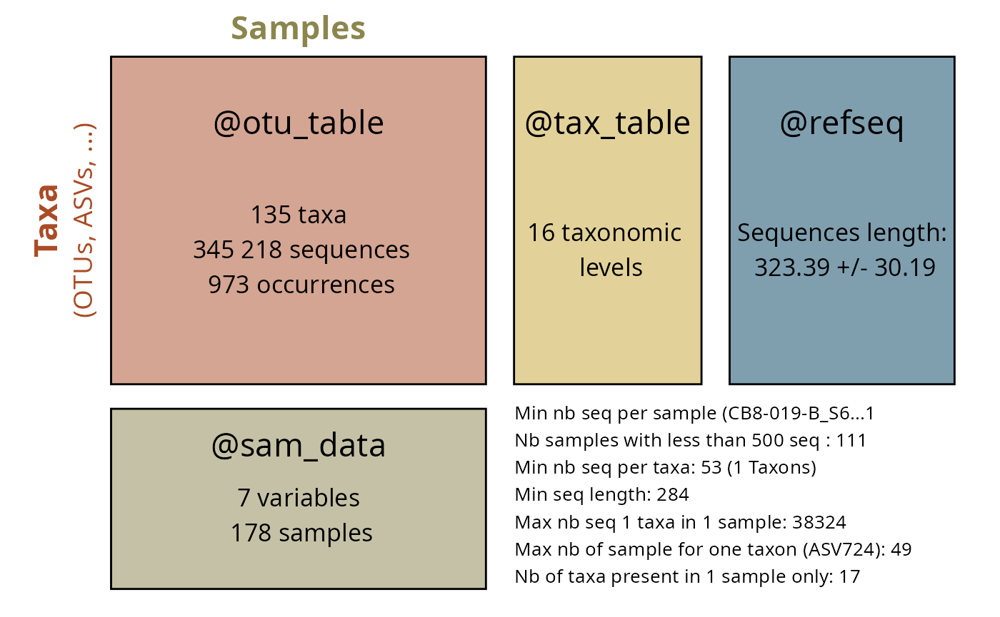
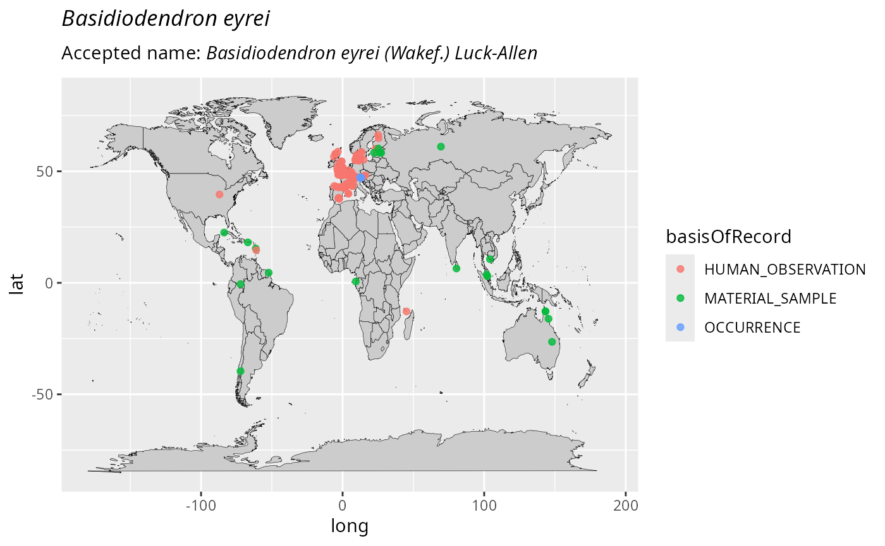

Overview
The Global Biodiversity Information Facility (GBIF) is the world’s largest repository of biodiversity occurrence data. The taxinfo package provides seamless integration with GBIF through specialized functions that retrieve occurrence data, create distribution maps, and analyze biogeographic patterns for taxa in your phyloseq objects.
Core GBIF Functions
-
tax_gbif_occur_pq(): Retrieve occurrence counts from GBIF -
plot_tax_gbif_pq(): Create distribution maps -
range_bioreg_pq(): Analyze biogeographic ranges -
tax_check_ecoregion(): Validate occurrences against ecoregions -
tax_occur_check_pq(): Check occurrences within a geographic radius
Note: Functions like
tax_gbif_occur_pq() and tax_occur_check_pq()
can work with either phyloseq objects or vectors of taxonomic names
(taxnames parameter). When using a phyloseq object, results
are automatically added to the tax_table. When using
taxnames, a tibble is returned.
Basic Occurrence Data Retrieval
Get verified taxonomic names
# Load and prepare example data
data("data_fungi_mini", package = "MiscMetabar")
# Keep only first 20 taxa for speed
data_clean <- prune_taxa(taxa = taxa_names(data_fungi_mini)[1:20], data_fungi_mini) |>
gna_verifier_pq(data_sources = 210)Find GBIF occurrence counts and add to phyloseq object
data_clean_gbif <- tax_gbif_occur_pq(data_clean)Example Visualization
Here’s an example of what GBIF occurrence data visualization can look like:

plot of chunk unnamed-chunk-4
Occurrence Counts by Country
Analyze geographic distribution patterns:
data_clean_gbif_country <- tax_gbif_occur_pq(data_clean, by_country = TRUE)
data_clean_gbif_country@tax_table |>
as.data.frame() |>
select(currentCanonicalSimple, US, FR, DE, GB, ES, MX) |>
tidyr::pivot_longer(
cols = c(US, FR, DE, GB, ES, MX),
names_to = "country",
values_to = "occurrences"
) |>
mutate(occurrences = as.numeric(occurrences)) |>
filter(!is.na(occurrences), occurrences > 0) |>
ggplot(aes(x = country, y = occurrences, fill = country)) +
geom_violin() +
geom_jitter(width = 0.2, alpha = 0.5, height = 0) +
scale_y_log10() +
stat_summary(
fun.data = function(x) {
return(data.frame(y = max(x) + 0.1, label = paste("n =", length(x))))
},
geom = "text",
vjust = 0
) +
labs(
title = "GBIF Occurrences by Country",
x = "Country",
y = "Number of occurrences (log scale)"
) +
theme_idest() +
theme(legend.position = "none")
plot of chunk unnamed-chunk-5
Temporal Patterns
Examine occurrence trends over time. Here we don’t use
add_to_phyloseq since the data frame output is
sufficient.
gbif_years <- tax_gbif_occur_pq(data_clean,
by_years = TRUE,
add_to_phyloseq = FALSE
) |>
tidyr::pivot_longer(cols = -canonicalName, names_to = "year", values_to = "count") |>
mutate(year = as.numeric(year))
# Visualize temporal trends for the occurences of taxa
gbif_years |>
ggplot(aes(x = year, y = log10(count + 1), color = canonicalName)) +
geom_line() +
geom_line(data = filter(gbif_years, !is.na(count)), linetype = "dotted") +
geom_point() +
labs(
title = "GBIF Occurrences Over Time",
x = "Year",
y = "Number of GBIF occurrences"
) +
theme_idest() +
ggrepel::geom_text_repel(
data = summarise(group_by(arrange(filter(gbif_years, !is.na(count)), desc(year)), canonicalName), count = first(count), year = first(year)),
aes(label = canonicalName, x = as.numeric(year)), hjust = 0,
direction = "y", size = 3
) +
xlim(2010, 2026) +
theme(legend.position = "none")
plot of chunk unnamed-chunk-6
gbif_years_cumsum <- gbif_years |>
mutate(year = as.numeric(year)) |>
arrange(year) |>
group_by(canonicalName) |>
mutate(year = as.numeric(year)) |>
mutate(cum_count = cumsum(tidyr::replace_na(count, 0)))
ggplot(gbif_years_cumsum, aes(
x = year, y = log10(cum_count + 1),
color = canonicalName
)) +
geom_line() +
geom_point() +
labs(
title = "GBIF Cumulative Occurrences Over Time",
x = "Year",
y = "Number of GBIF occurrences"
) +
theme_idest() +
ggrepel::geom_text_repel(
data = summarise(
group_by(
arrange(gbif_years_cumsum, desc(year)),
canonicalName
),
cum_count = first(cum_count),
year = first(year)
),
aes(
label = canonicalName,
x = as.numeric(year)
),
hjust = 0, direction = "y", size = 3
) +
xlim(2008, 2026) +
theme(legend.position = "none")
plot of chunk unnamed-chunk-7
Visualization and Mapping
Basic Distribution Plots
Create occurrence distribution visualizations:
# Plot global vs regional occurrences
psmelt(data_clean_gbif) |>
as.data.frame() |>
group_by(currentCanonicalSimple) |>
summarise(
Global_occurences = as.numeric(unique(Global_occurences)),
nb_seq = sum(Abundance),
nb_samp = sum(Abundance > 0)
) |>
filter(!is.na(Global_occurences)) |>
ggplot(aes(
x = log10(1 + nb_seq),
y = log10(1 + Global_occurences)
)) +
geom_point(alpha = 0.7) +
ggrepel::geom_text_repel(aes(label = currentCanonicalSimple),
vjust = -0.5,
size = 3,
fontface = "italic",
min.segment.length = 0.2,
force = 4
) +
coord_flip() +
labs(
title = "GBIF Occurrence Counts vs molecular abundance",
x = "Number of sequences (log scale)",
y = "Number of GBIF occurrences (log scale)"
) +
theme_idest()
plot of chunk unnamed-chunk-8
Interactive Distribution Maps
Create interactive maps showing species distributions:
plot_tax_gbif_pq(select_taxa_pq(data_clean, taxnames = "Ossicaulis lachnopus"),
interactive_plot = TRUE
)#> |--------------------------------------------|
#> | Total number (all records) : 227 |
#> | Kept records : 206 |
#> |--------------------------------------------|
#> | Kept records according to parameters:
#> | spatial_issue = FALSE, has_xy = TRUE...GBIF records of Ossicaulis lachnopus: download starting...
#>
------------- #1 (100%...)
[K
#> ...Records (XY) filtering summary:
#> ----------------------------------------------
#> step removed remaining
#> Grain filtering 3 203
#> Duplicated records 73 130
#> Absence records 0 130
#> Basis selection 49 81
#> Establishment selection 0 81
#> Time frame 0 81
#> Identical records 0 81
#> Raster centroids 0 81
#>
#> Initial records : 206
#> Total removed : 125
#> Final records (XY) : 81
#> ----------------------------------------------
#> Final records (no XY) : 0#> [[1]]Static Distribution Maps
distribution_maps <- plot_tax_gbif_pq(
taxnames = c("Ossicaulis lachnopus", "Basidiodendron eyrei"),
n_occur = 1000
)#> |--------------------------------------------|
#> | Total number (all records) : 227 |
#> | Kept records : 206 |
#> |--------------------------------------------|
#> | Kept records according to parameters:
#> | spatial_issue = FALSE, has_xy = TRUE...GBIF records of Ossicaulis lachnopus: download starting...
#>
------------- #1 (100%...)
[K
#> ...Records (XY) filtering summary:
#> ----------------------------------------------
#> step removed remaining
#> Grain filtering 3 203
#> Duplicated records 73 130
#> Absence records 0 130
#> Basis selection 49 81
#> Establishment selection 0 81
#> Time frame 0 81
#> Identical records 0 81
#> Raster centroids 0 81
#>
#> Initial records : 206
#> Total removed : 125
#> Final records (XY) : 81
#> ----------------------------------------------
#> Final records (no XY) : 0#> |--------------------------------------------|
#> | Total number (all records) : 1165 |
#> | Kept records : 857 |
#> |--------------------------------------------|
#> | Kept records according to parameters:
#> | spatial_issue = FALSE, has_xy = TRUE...GBIF records of Basidiodendron eyrei: download starting...
#>
------------- #1 (100%...)
[K
#> ...Records (XY) filtering summary:
#> ----------------------------------------------
#> step removed remaining
#> Grain filtering 27 830
#> Duplicated records 295 535
#> Absence records 0 535
#> Basis selection 286 249
#> Establishment selection 0 249
#> Time frame 0 249
#> Identical records 0 249
#> Raster centroids 0 249
#>
#> Initial records : 857
#> Total removed : 608
#> Final records (XY) : 249
#> ----------------------------------------------
#> Final records (no XY) : 0
distribution_maps[[1]]
plot of chunk unnamed-chunk-10
distribution_maps[[2]]
plot of chunk unnamed-chunk-10
Biogeographic Analysis
Range Analysis
data_clean_range <- range_bioreg_pq(
select_taxa_pq(data_clean,
taxnames = c("Ossicaulis lachnopus", "Basidiodendron eyrei")
),
make_plot = TRUE
)#> |--------------------------------------------|
#> | Total number (all records) : 227 |
#> | Kept records : 206 |
#> |--------------------------------------------|
#> | Kept records according to parameters:
#> | spatial_issue = FALSE, has_xy = TRUE...GBIF records of Ossicaulis lachnopus: download of sample starting...
#>
------------- #1 (100%...)
[K
#> ...Records (XY) filtering summary:
#> ----------------------------------------------
#> step removed remaining
#> Grain filtering 3 203
#> Duplicated records 73 130
#> Absence records 0 130
#> Basis selection 49 81
#> Establishment selection 0 81
#> Time frame 0 81
#> Identical records 0 81
#> Raster centroids 0 81
#>
#> Initial records : 206
#> Total removed : 125
#> Final records (XY) : 81
#> ----------------------------------------------
#> Final records (no XY) : 0#> |--------------------------------------------|
#> | Total number (all records) : 1165 |
#> | Kept records : 857 |
#> |--------------------------------------------|
#> | Kept records according to parameters:
#> | spatial_issue = FALSE, has_xy = TRUE...GBIF records of Basidiodendron eyrei: download of sample starting...
#>
------------- #1 (100%...)
[K
#> ...Records (XY) filtering summary:
#> ----------------------------------------------
#> step removed remaining
#> Grain filtering 27 830
#> Duplicated records 295 535
#> Absence records 0 535
#> Basis selection 286 249
#> Establishment selection 0 249
#> Time frame 0 249
#> Identical records 0 249
#> Raster centroids 0 249
#>
#> Initial records : 857
#> Total removed : 608
#> Final records (XY) : 249
#> ----------------------------------------------
#> Final records (no XY) : 0
data_clean_range[[2]]#> NULLEcoregion Validation
Check if occurrences match expected ecoregions:
tax_check_ecoregion(
taxnames = "Xylobolus subpileatus",
longitudes = c(2.3522, 4.2),
latitudes = c(48.8566, 33)
)#> $taxon_ecoregions
#> # A tibble: 91 × 6
#> taxon_name ECO_NAME biome realm n_occur prop_occur
#> <chr> <chr> <chr> <chr> <int> <dbl>
#> 1 Xylobolus subpileatus Lower New England / Nor… Temp… Near… 124 0.124
#> 2 Xylobolus subpileatus Pannonian Mixed Forests Temp… Pale… 65 0.065
#> 3 Xylobolus subpileatus Isthmian-Pacific Moist … Trop… Neot… 56 0.056
#> 4 Xylobolus subpileatus Florida Peninsula Temp… Near… 53 0.053
#> 5 Xylobolus subpileatus Piedmont Temp… Near… 53 0.053
#> 6 Xylobolus subpileatus North Atlantic Coast Temp… Near… 46 0.046
#> 7 Xylobolus subpileatus East Gulf Coastal Plain Temp… Near… 43 0.043
#> 8 Xylobolus subpileatus Cumberlands And Souther… Temp… Near… 38 0.038
#> 9 Xylobolus subpileatus Upper East Gulf Coastal… Temp… Near… 34 0.034
#> 10 Xylobolus subpileatus Trans-Mexican Volcanic … Trop… Neot… 27 0.027
#> # ℹ 81 more rows
#>
#> $points_ecoregion
#> # A tibble: 2 × 6
#> point_id longitude latitude ECO_NAME biome realm
#> <int> <dbl> <dbl> <chr> <chr> <chr>
#> 1 1 2.35 48.9 Atlantic Mixed Forests Temperat… Pale…
#> 2 2 4.2 33 North Saharan Steppe And Woodlands Deserts … Pale…
#>
#> $is_in_ecoregion
#> point_1 point_2
#> Xylobolus subpileatus FALSE FALSE
#>
#> $ecoregion
#> $ecoregion$`Xylobolus subpileatus`
#> Lower New England / Northern Piedmont
#> 124
#> Pannonian Mixed Forests
#> 65
#> Isthmian-Pacific Moist Forests
#> 56
#> Florida Peninsula
#> 53
#> Piedmont
#> 53
#> North Atlantic Coast
#> 46
#> East Gulf Coastal Plain
#> 43
#> Cumberlands And Southern Ridge And Valley
#> 38
#> Upper East Gulf Coastal Plain
#> 34
#> Trans-Mexican Volcanic Belt Pine-Oak Forests
#> 27
#> Upper West Gulf Coastal Plain
#> 26
#> Gulf Coast Prairies And Marshes
#> 25
#> Mississippi River Alluvial Plain
#> 25
#> Southern Blue Ridge
#> 25
#> Great Lakes
#> 22
#> North Central Tillplain
#> 22
#> Talamancan Montane Forests
#> 18
#> Corsican Montane Broadleaf And Mixed Forests
#> 17
#> Ozarks
#> 17
#> Chesapeake Bay Lowlands
#> 14
#> West Gulf Coastal Plain
#> 14
#> South Atlantic Coastal Plain
#> 13
#> Central Tallgrass Prairie
#> 12
#> Mid-Atlantic Coastal Plain
#> 12
#> Sierra Madre De Chiapas Moist Forests
#> 12
#> Western Himalayan Broadleaf Forests
#> 12
#> Interior Low Plateau
#> 11
#> Crosstimbers And Southern Tallgrass Prairie
#> 8
#> Italian Sclerophyllous And Semi-Deciduous Forests
#> 8
#> Costa Rican Seasonal Moist Forests
#> 7
#> Western Allegheny Plateau
#> 7
#> Central Appalachian Forest
#> 6
#> Himalayan Subtropical Pine Forests
#> 6
#> Oaxacan Montane Forests
#> 6
#> Central American Dry Forests
#> 5
#> Eastern Australian Temperate Forests
#> 5
#> Osage Plains/Flint Hills Prairie
#> 5
#> Tyrrhenian-Adriatic Sclerophyllous And Mixed Forests
#> 5
#> Ouachita Mountains
#> 4
#> Sierra Madre Oriental Pine-Oak Forests
#> 4
#> Southwest Iberian Mediterranean Sclerophyllous And Mixed Forests
#> 4
#> Balkan Mixed Forests
#> 3
#> High Allegheny Plateau
#> 3
#> Isthmian-Atlantic Moist Forests
#> 3
#> Jalisco Dry Forests
#> 3
#> Northwestern Thorn Scrub Forests
#> 3
#> Sierra Madre Del Sur Pine-Oak Forests
#> 3
#> Bajío Dry Forests
#> 2
#> Canary Islands Dry Woodlands And Forests
#> 2
#> Chiapas Montane Forests
#> 2
#> Dinaric Mountains Mixed Forests
#> 2
#> East African Montane Moorlands
#> 2
#> Iberian Sclerophyllous And Semi-Deciduous Forests
#> 2
#> Kayah-Karen Montane Rain Forests
#> 2
#> Kazakh Forest Steppe
#> 2
#> Magdalena Valley Montane Forests
#> 2
#> Northwestern Himalayan Alpine Shrub And Meadows
#> 2
#> Po Basin Mixed Forests
#> 2
#> Southern Pacific Dry Forests
#> 2
#> Taiheiyo Evergreen Forests
#> 2
#> Western Himalayan Subalpine Conifer Forests
#> 2
#> Albertine Rift Montane Forests
#> 1
#> Alps Conifer And Mixed Forests
#> 1
#> Balsas Dry Forests
#> 1
#> Cantabrian Mixed Forests
#> 1
#> Cauca Valley Montane Forests
#> 1
#> Central American Pine-Oak Forests
#> 1
#> Central European Mixed Forests
#> 1
#> Central Mexican Matorral
#> 1
#> Columbia Plateau
#> 1
#> Crete Mediterranean Forests
#> 1
#> English Lowlands Beech Forests
#> 1
#> Ethiopian Montane Forests
#> 1
#> Ethiopian Montane Grasslands And Woodlands
#> 1
#> Huang He Plain Mixed Forests
#> 1
#> Northern Appalachian / Acadian
#> 1
#> Northern Zanzibar-Inhambane Coastal Forest Mosaic
#> 1
#> Northwest Russian-Novaya Zemlya Tundra
#> 1
#> Northwestern Andean Montane Forests
#> 1
#> Nujiang Langcang Gorge Alpine Conifer And Mixed Forests
#> 1
#> Pindus Mountains Mixed Forests
#> 1
#> Prairie-Forest Border
#> 1
#> Pyrenees Conifer And Mixed Forests
#> 1
#> Queensland Tropical Rain Forests
#> 1
#> Sierra Madre Occidental Pine-Oak Forests
#> 1
#> Sonoran Desert
#> 1
#> Superior Mixed Forest
#> 1
#> Tamaulipan Thorn Scrub
#> 1
#> Upper Gangetic Plains Moist Deciduous Forests
#> 1
#> Western European Broadleaf Forests
#> 1
#> Western Guinean Lowland Forests
#> 1Session information
#> R version 4.6.0 (2026-04-24)
#> Platform: x86_64-pc-linux-gnu
#> Running under: Pop!_OS 24.04 LTS
#>
#> Matrix products: default
#> BLAS: /usr/lib/x86_64-linux-gnu/openblas-pthread/libblas.so.3
#> LAPACK: /usr/lib/x86_64-linux-gnu/openblas-pthread/libopenblasp-r0.3.26.so; LAPACK version 3.12.0
#>
#> locale:
#> [1] LC_CTYPE=en_US.UTF-8 LC_NUMERIC=C
#> [3] LC_TIME=en_US.UTF-8 LC_COLLATE=en_US.UTF-8
#> [5] LC_MONETARY=en_US.UTF-8 LC_MESSAGES=en_US.UTF-8
#> [7] LC_PAPER=en_US.UTF-8 LC_NAME=C
#> [9] LC_ADDRESS=C LC_TELEPHONE=C
#> [11] LC_MEASUREMENT=en_US.UTF-8 LC_IDENTIFICATION=C
#>
#> time zone: Europe/Paris
#> tzcode source: system (glibc)
#>
#> attached base packages:
#> [1] stats graphics grDevices utils datasets methods base
#>
#> other attached packages:
#> [1] taxinfo_0.1.2 MiscMetabar_0.16.8 dplyr_1.2.1 ggplot2_4.0.3
#> [5] phyloseq_1.56.0
#>
#> loaded via a namespace (and not attached):
#> [1] RColorBrewer_1.1-3 wk_0.9.5 jsonlite_2.0.0
#> [4] magrittr_2.0.5 farver_2.1.2 CoordinateCleaner_3.0.1
#> [7] vctrs_0.7.3 multtest_2.68.0 RCurl_1.98-1.19
#> [10] base64enc_0.1-6 terra_1.9-27 htmltools_0.5.9
#> [13] forcats_1.0.1 curl_7.1.0 s2_1.1.11
#> [16] raster_3.6-32 divent_0.5-4 KernSmooth_2.23-26
#> [19] htmlwidgets_1.6.4 plyr_1.8.9 zoo_1.8-15
#> [22] uuid_1.2-2 whisker_0.4.1 igraph_2.3.2
#> [25] lifecycle_1.0.5 iterators_1.0.14 pkgconfig_2.0.3
#> [28] Matrix_1.7-5 R6_2.6.1 fastmap_1.2.0
#> [31] rbibutils_2.4.1 digest_0.6.39 mapview_2.11.4
#> [34] S4Vectors_0.50.1 leafem_0.2.5 textshaping_1.0.5
#> [37] crosstalk_1.2.2 vegan_2.7-5 labeling_0.4.3
#> [40] urltools_1.7.3.1 httr_1.4.8 NMOF_2.11-0
#> [43] mgcv_1.9-4 compiler_4.6.0 proxy_0.4-29
#> [46] bit64_4.8.2 withr_3.0.2 brew_1.0-10
#> [49] S7_0.2.2 DBI_1.3.0 maps_3.4.3
#> [52] MASS_7.3-65 gbif.range_1.6.0 leaflet_2.2.3
#> [55] classInt_0.4-11 biomformat_1.40.0 permute_0.9-10
#> [58] oai_0.4.0 tools_4.6.0 units_1.0-1
#> [61] otel_0.2.0 ape_5.8-1 zip_3.0.0
#> [64] rgbif_3.8.5 satellite_1.0.6 glue_1.8.1
#> [67] nlme_3.1-169 grid_4.6.0 sf_1.1-1
#> [70] cluster_2.1.8.2 reshape2_1.4.5 ade4_1.7-24
#> [73] generics_0.1.4 leaflet.providers_3.0.0 gtable_0.3.6
#> [76] tzdb_0.5.0 class_7.3-23 tidyr_1.3.2
#> [79] data.table_1.18.4 hms_1.1.4 sp_2.2-1
#> [82] xml2_1.5.2 utf8_1.2.6 XVector_0.52.0
#> [85] BiocGenerics_0.58.1 ggrepel_0.9.8 foreach_1.5.2
#> [88] pillar_1.11.1 stringr_1.6.0 vroom_1.7.1
#> [91] rglobi_0.3.4 splines_4.6.0 lattice_0.22-9
#> [94] survival_3.8-6 FNN_1.1.4.1 gmp_0.7-5.1
#> [97] bit_4.6.0 tidyselect_1.2.1 Biostrings_2.80.1
#> [100] knitr_1.51 IRanges_2.46.0 Seqinfo_1.2.0
#> [103] svglite_2.2.2 crul_1.6.0 stats4_4.6.0
#> [106] xfun_0.58 wikitaxa_0.5.0 Biobase_2.72.0
#> [109] taxize_0.10.1 leafpop_0.1.0 stringi_1.8.7
#> [112] lazyeval_0.2.3 evaluate_1.0.5 codetools_0.2-20
#> [115] httpcode_0.3.0 tibble_3.3.1 cli_3.6.6
#> [118] RcppParallel_5.1.11-2 systemfonts_1.3.2 Rdpack_2.6.6
#> [121] jquerylib_0.1.4 Rcpp_1.1.1-1.1 rnaturalearth_1.2.0
#> [124] triebeard_0.4.1 png_0.1-9 parallel_4.6.0
#> [127] readr_2.2.0 openalexR_3.0.1 mclust_6.1.2
#> [130] ClusterR_1.3.6 WikipediR_1.7.1 bitops_1.0-9
#> [133] scales_1.4.0 e1071_1.7-17 purrr_1.2.2
#> [136] crayon_1.5.3 geosphere_1.6-8 rlang_1.2.0